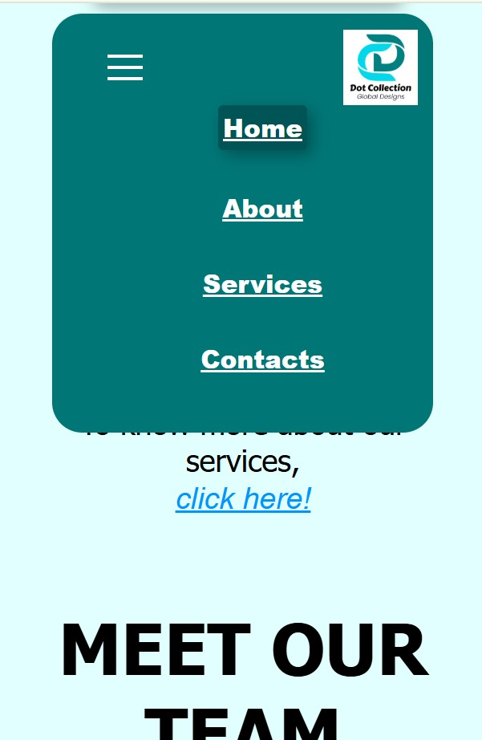
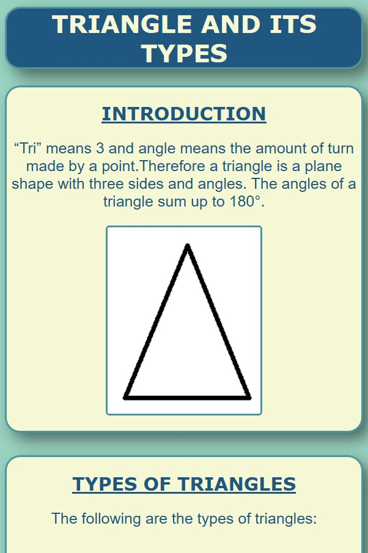
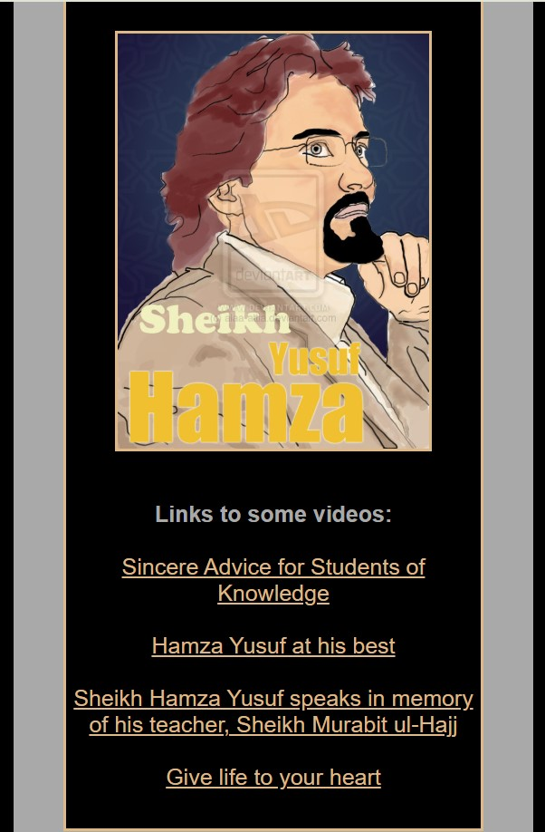

Dot Collection Global Website
This is the website of Dot collection Global Designs. It creates awareness about the company's mission, vision, core values, its services, team and contacts. Its still under test.
Technologies used: HTML, CSS and JavaScript
open projectDocumentation Page
This is a documentation page about the basic types of triangle. This shows the skill of understanding css box model.
Technologies used: HTML and CSS
open projectTribute Page - Hamza Yusuf
This page gives Tribute to Hamza Yusuf as a renowned islamic scholar who travelled round the world in seek of knowledge. It shows a basic understanding of css and html and also how to play with css to get out the design in mind.
Technologies used: HTML and CSS
open project